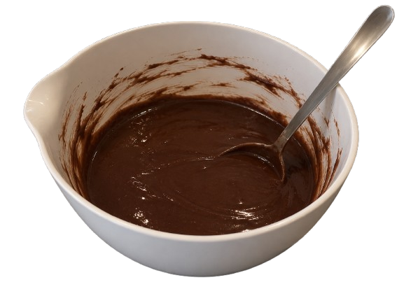

- Sätt ugnen på 200°C, under- och övervärme.
- Smörj och bröa en form med löstagbar kant, ca 24 cm i diameter (för 8 bitar) eller spänn fast ett bakplåtspapper på botten.
- Smält smöret i kastrull, låt svalna något.
- Vispa ihop ägg och socker (använd inte en elvisp).
- Blanda kakao, vaniljsocker, vetemjöl och salt i en bunke och rör ner i äggblandningen.
- Tillsätt det smälta smöret och blanda försiktigt ihop till en jämn smet och häll sedan över smeten i formen.
- Grädda mitt i ugnen i ca 10-15 minuter (öka eller minska tiden vid behov beroende på hur kladdig du vill ha den).
- Ta ut kladdkakan och låt svalna.
